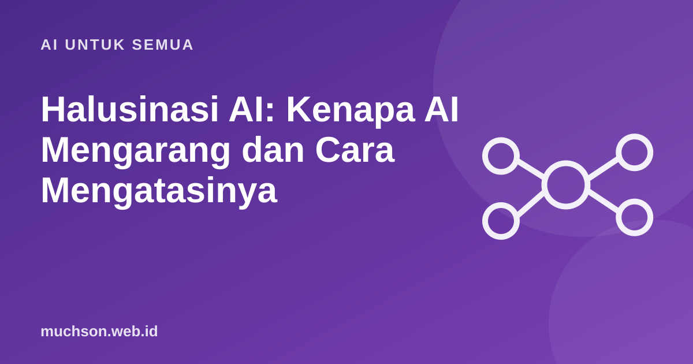

Beranda › Artikel › AI untuk Semua
AI untuk SemuaHalusinasi AI: Kenapa AI Mengarang dan Cara Mengatasinya
Salah satu risiko terbesar memakai chatbot adalah jawaban yang meyakinkan tetapi keliru: kutipan fiktif, angka karangan, atau nama orang yang tidak ada. Ini bukan bug yang aneh, melainkan akibat cara kerja model. Memahaminya membuat Anda lebih waspada.

Mengapa AI mengarang?
Model bahasa dilatih untuk menebak kata berikutnya yang paling masuk akal berdasarkan pola dari banyak teks. Tujuannya menghasilkan teks yang lancar dan wajar, bukan memeriksa kebenaran. Ketika ia tidak tahu, ia tetap terdorong menyusun kalimat yang terdengar benar. Hasilnya bisa berupa fakta salah yang dibungkus gaya meyakinkan. Fenomena ini disebut halusinasi.
Contoh halusinasi yang sering terjadi
- Kutipan buku, jurnal, atau putusan hukum yang tidak pernah ada.
- Tautan yang tidak bisa dibuka.
- Angka statistik yang tampak spesifik tetapi tidak berdasar.
- Biografi orang yang menggabungkan fakta tokoh berbeda.
- Kode yang memanggil fungsi atau pustaka yang tidak ada.
Cara memeriksa jawaban AI
Cara menurunkan risiko: minta AI menjawab hanya dari dokumen yang Anda berikan dan mengatakan "tidak tahu" jika tidak ada. Teknik ini dipakai pada sistem berbasis dokumen (RAG). Tetap periksa hasilnya.